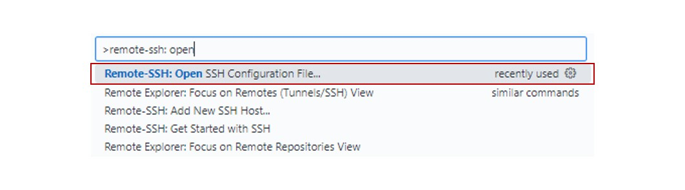
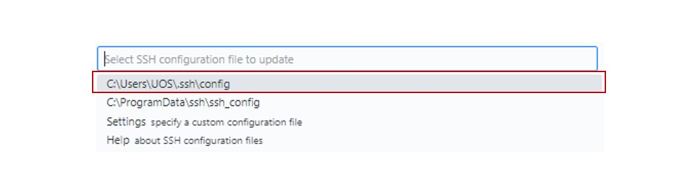
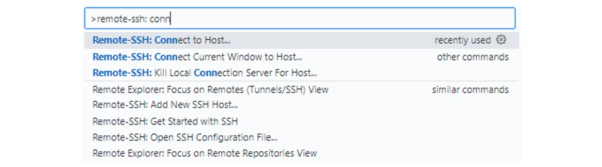
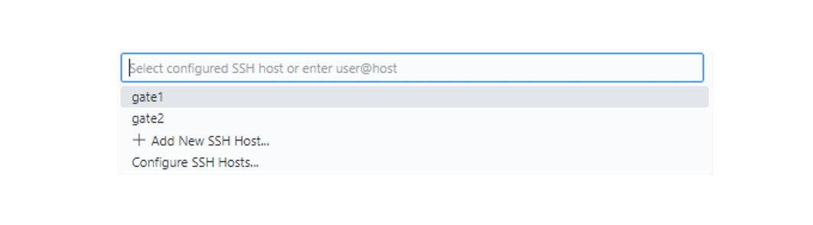
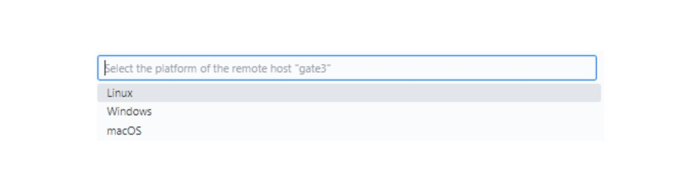
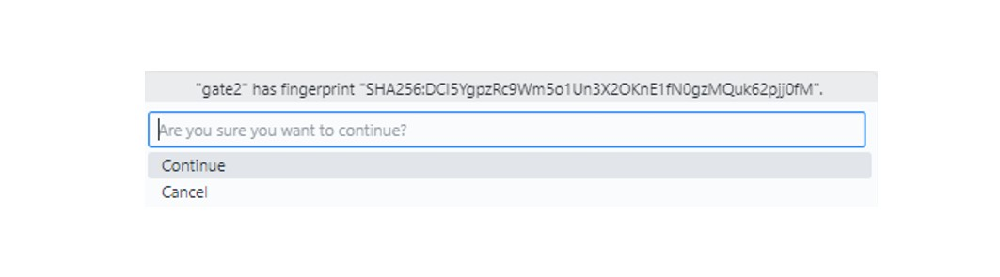
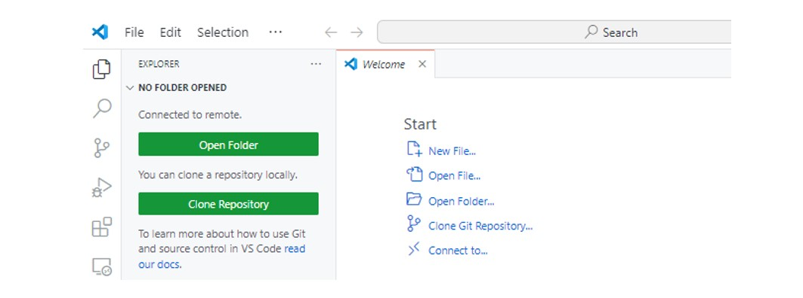

{kind=link}
Host gate1
HostName 172.16.10.36
Port 22
User 사용자ID
IdentityFile 키파일 경로
Host gate2
HostName 172.16.10.37
Port 22
User 사용자ID
IdentityFile 키파일 경로Chapter2. 접속 방법
1. Remote-SSH 설치
VScode를 이용하여 Remote-SSH 접속을 합니다. 이를 위해 SSH 접속에 필요한 환경 설정이 필요합니다.
💡 SSH
SSH란 원격으로 다른 컴퓨터에 접속하여
command에 기반한 작업을 수행하도록 돕는 도구입니다.SSH 접속은 다양한 방법이 있지만, VScode를 통한 연결 방법이 가장 쉽고 정확합니다.
따라서 VScode를 자신의 운영체제에 맞게 설치하시고 Extension를 통해 Remote-SSH 확장 프로그램을 설치하셔야 합니다.
2. Config 파일 수정
- Remote-SSH를 설치했다면, (CTRL + P)를 입력하고 나오는 검색(search) 칸에
>remote-ssh : open ssh configuration를 입력합니다. 
※ 해당 화면은
.ssh폴더가 없는 경우, .ssh폴더와 config파일을 같이 생성합니다. .ssh폴더가 있는 경우에는 config파일만 생성합니다.
다음, 입력창에
C:\Users\사용자\.ssh\config라고 되어있는 메시지를 선택합니다. .ssh폴더의 config 파일 내용을 아래와 같이 수정합니다.
config 파일 내용
3. SSH 접속
VScode에서 (CRTL+SHIFT+P)를 누릅니다.
> remote-ssh : connect to host를 입력한 후, 선택합니다. gate1 또는 gate2를 선택합니다. gate1과 gate2는 동일한 환경입니다. 
운영체제 선택에서 Linux를 선택합니다. 
Continue를 선택합니다. 
gate에 접속 후, 본인이 선택한 gate 넘버가 맞는지 왼쪽 아래의 SSH:gate 넘버를 확인합니다.
그 후, 탐색기(Explorer)를 클릭한 후, Open Folder를 클릭하면 디렉토리가 생성됩니다. 
경로가
/home1/{사용자ID}가 맞는지 확인한 후, OK를 선택합니다. 이 단계는 새로운 파일이 생성되기 전까지는 접속할 때마다 계속 실행해주어야 합니다.여기까지 잘 진행되셨다면, SSH에 접속되었습니다!